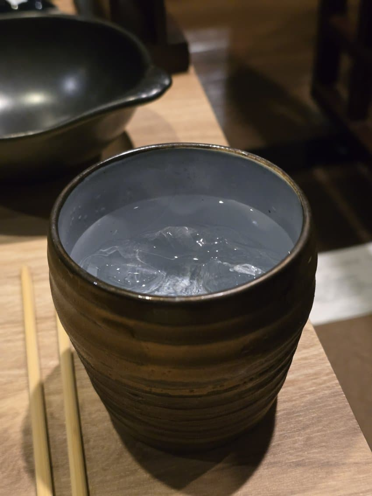

← 전체 리뷰 목록
원문 보기
리뷰✍️
무라오 간단 리뷰
하쿠슈게이게이¡ · 2026-06-14 20:52:31

쿠세가 고급지다 신기함
첫 입에는 감칠맛이 감돌고 얼음이 좀 녹으니 달달한 맛이 돌기 시작한다 크리미한 느낌이 있고 바디감도 어느정도 있음
전반적으로 쌉쌀한 맛이 깔려잇다
댓글 2개
HighCost
06.14 20:54:31
마쉿겠다
조선탈리스커
06.14 21:06:17
어흐
← 최신 방향
핰꼬리) 프라팡 엑스트라
과거 방향 →
하톡리) 위톡 후반전 리뷰
댓글 2개